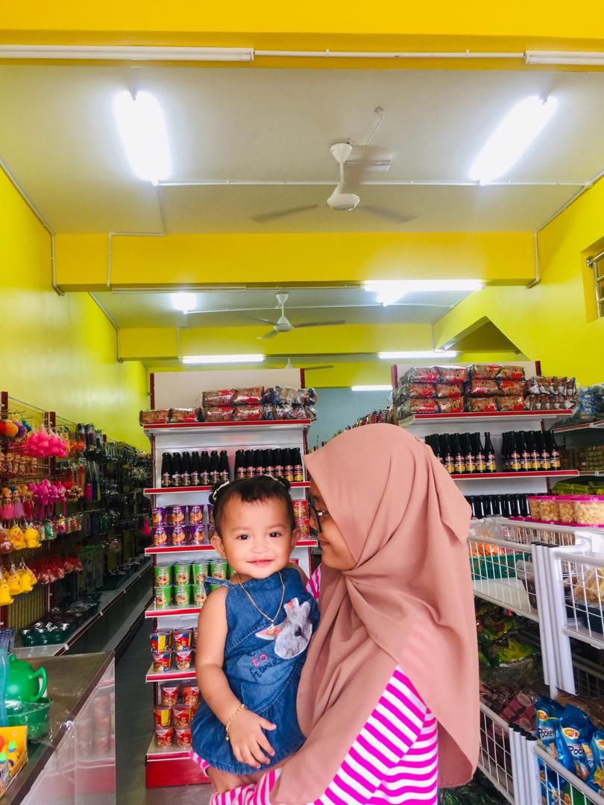
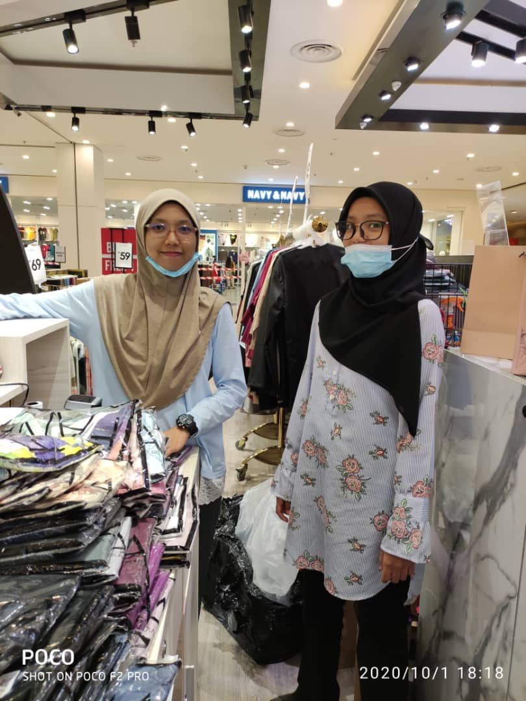
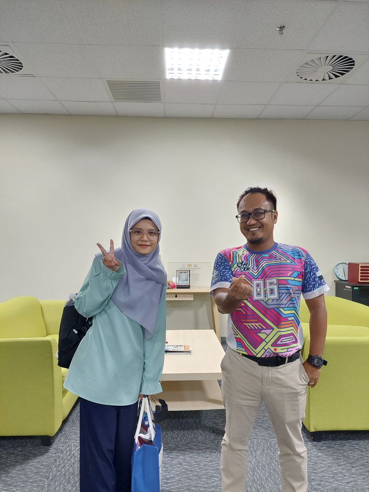

| RETAIL STORE | FANA COUTURE | PAHANG PUBLIC LIBRARY CORPORATION(PPAP) |
|  Part-time work at a retail store. I worked here for 2 months after SPM. |
 I worked on weekends as a part-timer with my sister. |
 I was doing my internship to meet the requirements of the Library Science course (industrial training). I was given training for 6 weeks to complete my internship.Me and my supervisor on last day at PPAP |